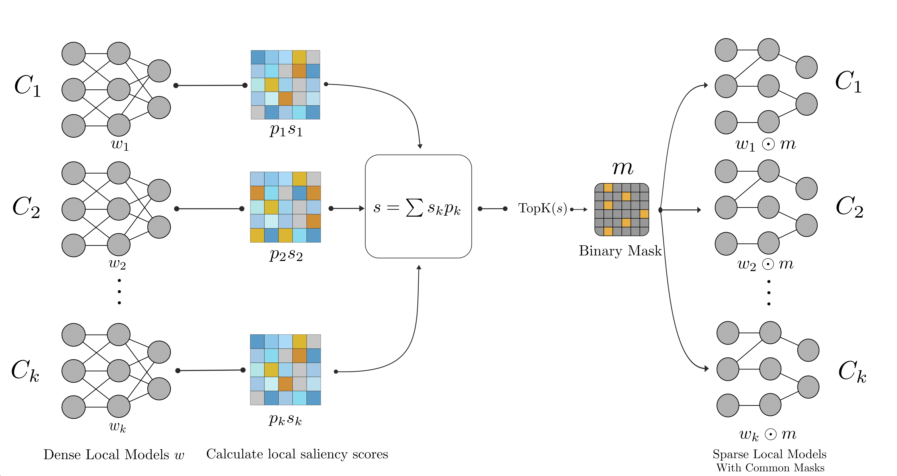

Transactions on Machine Learning Research · 2026
SSFL: Discovering Sparse Unified Subnetworks at Initialization for Efficient Federated Learning

Overview
Federated learning can spend much of its time communicating model updates. Sparse training reduces the number of parameters sent, but changing the sparse pattern throughout training adds coordination work when clients have different data.
Salient Sparse Federated Learning (SSFL) chooses a common sparse subnetwork before training begins. Clients contribute saliency scores computed on their local data; the server combines them and selects the active parameters. All clients then train and communicate updates within that same fixed subnetwork.
How it works
Discover the mask
At initialization, each client scores model parameters using a minibatch of local data. The server takes a data-size-weighted average of the scores and keeps the highest-scoring parameters.
Train in one subnetwork
The server broadcasts the resulting mask once. Clients train only the active weights, and sparse updates are aggregated within this shared parameter space.
Results at a glance
On ResNet-18 with a non-IID Dirichlet data partition, SSFL achieves the highest accuracy in the paper's comparison while communicating about half as much as the dense baseline.
| Method | CIFAR-10 accuracy | CIFAR-100 accuracy | Communication |
|---|---|---|---|
| SSFL | 88.29% | 61.37% | 223.4 MB |
| DisPFL (sparse) | 85.12% | 59.21% | 224.0 MB |
| FedAvg-FT (dense) | 88.02% | 59.42% | 446.9 MB |
The CIFAR-10 result corresponds to more than 20% lower classification error than DisPFL. In a geographically distributed deployment at 90% sparsity, SSFL also reduced mean aggregation time from 1.91 s to 0.82 s per round for a 1.73M-parameter model, a 2.3× speedup.
Communication in the table uses the paper's values-only encoding assumption. See the paper for variability, other baselines, datasets, and settings.
Code
The reference implementation contains the original SSFL experiments and instructions. A Flower Baseline contribution with paper-scale CIFAR configurations is currently under review.
BibTeX
@article{ohib2026ssfl,
title={{SSFL}: Discovering Sparse Unified Subnetworks at Initialization for Efficient Federated Learning},
author={Riyasat Ohib and Bishal Thapaliya and Gintare Karolina Dziugaite and Jingyu Liu and Vince D. Calhoun and Sergey Plis},
journal={Transactions on Machine Learning Research},
issn={2835-8856},
year={2026},
url={https://openreview.net/forum?id=kUZ6LhUB26}
}